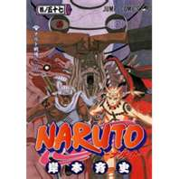

"Naruto" is a ongoing manga(comic)that is illustratedand written by
Masashi kishimoto. This manga seies is published in shuueisha,
weekly shonen JUMP.
The plot tells the story of Naruto Uzumaki, an adolescent ninja who constantly searches for recognition and aspires to become a
Hokage, the ninja in his village who is acknowledged as the leader and the strongest of all. "Naruto" can be a typical
inspiring blood manga, cause the vivid characters in the manga got their own faith for each other, especially for Naruto.
Naruto Uzumaki trys to"Naruto" is a ongoing manga(comic)that is illustratedand written by
Masashi kishimoto. This manga seies is published in shuueisha, weekly shonen JUMP. The plot tells the story of Naruto Uzumaki, an adolescent ninja who constantly searches for recognition and aspires to become a Hokage, the ni tell us that fate can be changed by ourselves, as long as we never give up.
This website is avaliable for all naruto fans. If you want to enjoy the storyline without
knowing them now, I recommend you not to use this website. Enjoy!


These are the latest comics of naruto! Check it out!

 width="132" height="23" alt""/>
width="132" height="23" alt""/>